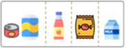

bullet
빈칸 박스 꾸밈요소, 예문에 사용한다.
blankBox 예시
지난주에 친구들과 고구마 농장에 갔습니다. 농장에는 ㄱ 밭과 멋진 연못이 있었습니다. 우리는 밭에 쪼르르 앉아서 고구마를 열심히 캤습니다. 울퉁불퉁한 고구마가 ㄴ 열렸습니다.
텍스트박스 꾸밈요소
squareBox 예시
채팅 프로필 꾸밈요소
말풍선
기본 말풍선
말풍선 꼬리 위
말풍선 꼬리 아래
채팅 대화형 기본
-
1 촛불집회는 사회 문제 해결을 평화롭게 요구하는 방법이야.
-
2 촛불집회는 사회 문제 해결을 평화롭게 요구하는 방법이야.
채팅 대화형 좌우
-
1 촛불집회는 사회 문제 해결을 평화롭게 요구하는 방법이야.
-
2 촛불집회는 사회 문제 해결을 평화롭게 요구하는 방법이야.
문항 안에 사용하는 제목
문항 안에 사용하는 리스트
- 기본적인 리스트 스타일입니다.
- 보기 안에 리스트 형태를 써야 할때 사용합니다.
텍스트 그룹 제목, 이름, 주석 등을 묶어 사용할때
서영이를 사랑하는 아빠가 공주에서 ※지석: 죽은 사람의 인적 사항이나 무덤의 소재를 기록하여 묻은 판석이나 도판
시 형태
꽃이 얼굴을 내밀었다.
내가 먼저 본 줄 알았지만
봄이 쫓아가던 길목에서
내가 보아주기를 날마다 기다리고 있었다.
내가 먼저 말 건 줄 알았지만
바람과 인사하고 햇살과 인사하며
날마다 내게 말을 걸고 있었다.
내가 먼저 웃어 준 줄 알았지만
떨어질 꽃잎도 지켜 내며
나를 향해 더 많이 활짝 웃고 있었다.
내가 더 나중에 보아서 미안하다.
꽃이 얼굴을 내밀었다.
내가 먼저 본 줄 알았지만
봄이 쫓아가던 길목에서
내가 보아주기를 날마다 기다리고 있었다.
내가 먼저 말 건 줄 알았지만
바람과 인사하고 햇살과 인사하며
날마다 내게 말을 걸고 있었다.
내가 먼저 웃어 준 줄 알았지만
떨어질 꽃잎도 지켜 내며
나를 향해 더 많이 활짝 웃고 있었다.
내가 더 나중에 보아서 미안하다.
배경타입 기능에 상관없이 사용할 수 있도록
모니터
- [지구본의 특징]
- [세계지도의 특징]
- [지구본과 세계지도의 공통점]
칠판
엽서, 편지
서영이를 사랑하는 아빠가 공주에서 ※지석: 죽은 사람의 인적 사항이나 무덤의 소재를 기록하여 묻은 판석이나 도판
안녕. 난 중국에 사는 웨이야.
①중국은 세계에서 가장 큰 나라야. ②4개의 섬나라로 되어 있고 ③환태평양 조산대에 있어서 지진과 화산이 많이 일어나서 늘 걱정이 많아.
④우리나라는 한자를 사용해. 세계에서 인구가 가장 많은 나라이고, 여러 가지 산업이 발달했어. 그런데 중국은 ⑤위도가 높아 냉대 기후가 널리 나타나니까 옷을 따뜻하게 입고와.
신문

스모그는 원래 연기(smoke)와 안개(fog)가 합쳐져 만들어진 말이지만, 일반적으로 자동차 등이 내뿜는 매연으로 인해 오염된 공기층을 지칭하는 것으로서 성분이 다양하다. 이 외에도 지구촌 곳곳에 여러 환경문제가 발생하고 있고 해결을 위한 노력도 계속되고 있다.
일기
책
노트
리포트
| 구분 | 내용 |
|---|---|
| 원인 |
전쟁이 일어났기 때문이다. |
| 문제점 | |
| 해결을 위한 노력 |
모금 활동을 하고 식량, 의류 등을 지원한다. |
핸드폰+대화창
핸드폰+포털
SNS
오늘은 영덕에 있는 신돌석 장군님의 생가에 다녀왔습니다. 그곳에서 신돌석 장군님의 초상화도 볼 수 있었습니다.
포스터
우리 미술관에서는 김홍도, 신윤복 등 조선 후기 유명 화가들의 그림을 통해 그 당시 사람들의 생활 모습을 엿볼 수 있는 특별전을 마련하였습니다. 많은 참여 바랍니다.
- 전시기간 : 20△△년 △월 △일 ~ △월 △일
- 장소 : 1층 특별 전시실
카드박스
은 좁은 면적에 비해 나라가 많으며, 북반구에 있다.

기름 13L로 221㎞를 갈 수 있는 가 자동차
1 전기 제품 사용하지 않을 때
1 우리나라 최남단 ‘독도’ 방문기
우리학교 독도사랑 동아리 대원들이 OO일에 독도를 다녀왔다. 우리나라 최남단 ‘독도’ 방문을 위해 우리학교 독도사랑 대원들은
input
분수
분수 예문에 사용할때
라디오 보기가 긴 형태일때
라디오 type2 보기가 짧거나 이미지 일때
라디오 type3
라디오 type4
라디오 type5 Label 안에 카드박스를 사용. 카드박스 컴포넌트 활용
라디오 type6 테이블 안에서 선택
| 구분 | 관찰결과 |
|---|---|
| 불꽃이 타는 모습 |
불꽃의 모양은 위 아래로 길쭉한 모양이고, |
| 불꽃 주변의 밝기 |
|
| 손을 가까이 했을 때의 느낌 | |
| 그 밖에 관찰한 것 |
불꽃이 흔들린다. |
라디오 type6 테이블 안에서 선택, 선택박스가 tbody th에 있을때 인접 td도 선택 디자인 적용
| 테이블 1 | 테이블 2 | 테이블 3 |
|---|---|---|
| 선택1에 대한 자세한 내용 | 선택1에 대한 자세한 내용222 | |
| 선택2에 대한 자세한 내용 | 선택2에 대한 자세한 내용2 | |
| 선택3에 대한 자세한 내용 | 선택3에 대한 자세한 내용2 |
라디오 type7 그룹 선택형
라디오 type7 그룹 선택형 가로정렬
라디오 type8
체크박스 보기가 긴 형태일때
체크박스 type2 보기가 짧거나 이미지 일때
체크박스 type3 여러 요소 혼용
체크박스 type3 여러 요소 혼용
체크박스 type4 카드박스 가로정렬
체크박스 type5 테이블 안에서 선택
| 조사 내용 | 인도의 자연·인문 환경과 사람들의 의식주 생활 모습 |
|---|---|
| 인도의 환경 |
신분제도가 아직 남아있다. |
| 생활 모습 |
|
체크박스 type5 테이블 안에서 선택, 선택박스가 tbody th에 있을때 인접 td도 선택 디자인 적용
| 이름 | 조사한 나라 | 주요 음식(요리) |
|---|---|---|
| 멕시코 | 고기를 쉽고 간단하게 조각내어 구워 먹는 케밥 | |
| 뉴질랜드 | 땅의 열을 이용해 고기과 야채를 익혀서 만든 향이 | |
| 튀르키예 | 얇게 구운 옥수수빵에 채소와 고기를 넣어 만든 타고 | |
| 인도네시아 | 묵은 밥과 자투리 식재료를 기름에 볶아 만든 나시고랭 | |
| 베트남 | 여러 종류의 치즈를 녹인 소스에 재료를 찍어 먹는 퐁듀 |
체크박스 type6 보고서 형식
- [지구본의 특징]
- [세계지도의 특징]
- [지구본과 세계지도의 공통점]
답답형
답답형 type2 테이블
| 원 | 삼각형 | 사각형 |
|---|---|---|
| 1 | 2 | 3 |
답답형 type6 ㄱ~ㅁ 순서대로 입력
- ㄱ
- ㄴ
- ㄷ
- ㄹ
- ㅁ
- ㅂ
- ㅅ
- ㅇ
핫스폿
핫스폿 type2 (리스트 형태)
-
 내가 좋아하는 음식과 싫어하는 음식을 기준으로 분류했어.
내가 좋아하는 음식과 싫어하는 음식을 기준으로 분류했어.
-  쓰레기 종류를 기준으로 캔류, 병류, 비닐류, 종이류로 분류했어.
-
 쓰레기 모양을 기준으로 둥근 것과 네모난 것으로 분류했어.
쓰레기 모양을 기준으로 둥근 것과 네모난 것으로 분류했어.
핫스폿 type3 (카드 형태)
핫스폿 type4 문장형
핫스폿 type5 문장형 왼족 정렬, 중앙배치
버팀대를 돌돌 감고 뻗어 가.
빙글빙글 따라가면 있을까?
우아, 포도가 열렸어!
알맹이가 송알송알, 포도야.
아주 맛나.
핫스폿 type6 이미지 위에 말풍선, 카드박스 일때 사용합니다. 버튼일때는 type13

핫스폿 type9 대화형
핫스폿 type9 대화형 좌우
핫스폿 type10 보고서 형식
핫스폿 type11 좌우 다단
핫스폿 type12 검색 레이아웃
핫스폿 type13 이미지 위에 버튼일때만 사용합니다.
핫스폿 type15 테이블 안에서 선택
| 구분 | 내용 |
|---|---|
| 원인 |
전쟁이 일어났기 때문이다. |
| 문제점 | |
| 해결을 위한 노력 |
모금 활동을 하고 식량, 의류 등을 지원한다. |